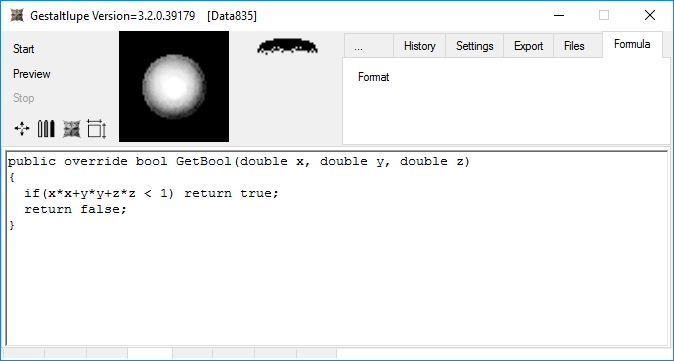

The formula sorce code can be edited by pressing the Formula tab on the upper right.

Because everything in Gestaltlupe is based on Microsoft .NET framework, all predefined mathematical methods has to start with Math.
public override bool GetBool(double x, double y, double z)
{
if (x*x + y*y + z*z <1) return true;
if (Math.Abs(x) + Math.Abs(y) + Math.Abs(z) < 1.4) return true;
return false;
}

Surface colours can be defined in the field additionalPointInfo. The rgb-values of the surface color corresponds to (additionalPointInfo.red, additionalPointInfo.green, additionalPointInfo.blue).
public override bool GetBool(double x, double y, double z)
{
if(x*x+y*y+z*z<1)
{
additionalPointInfo.red=1;
additionalPointInfo.green=1;
return true;
}
if(Math.Abs(x)+Math.Abs(y)+Math.Abs(z)<1.4)
{
additionalPointInfo.blue=0.6;
return true;
}
return false;
}

Of course to see the colors, the parameter Color Outside has to be set in Material tab.